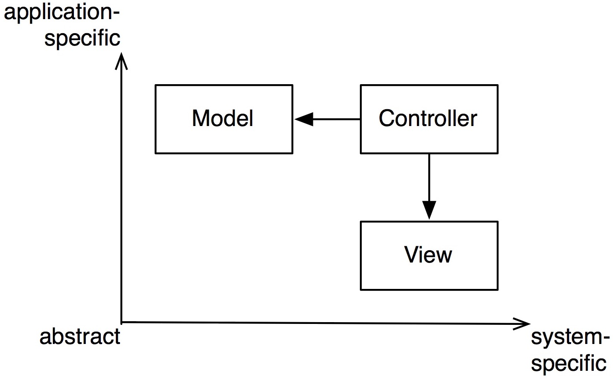
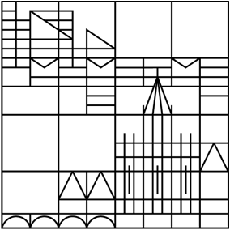
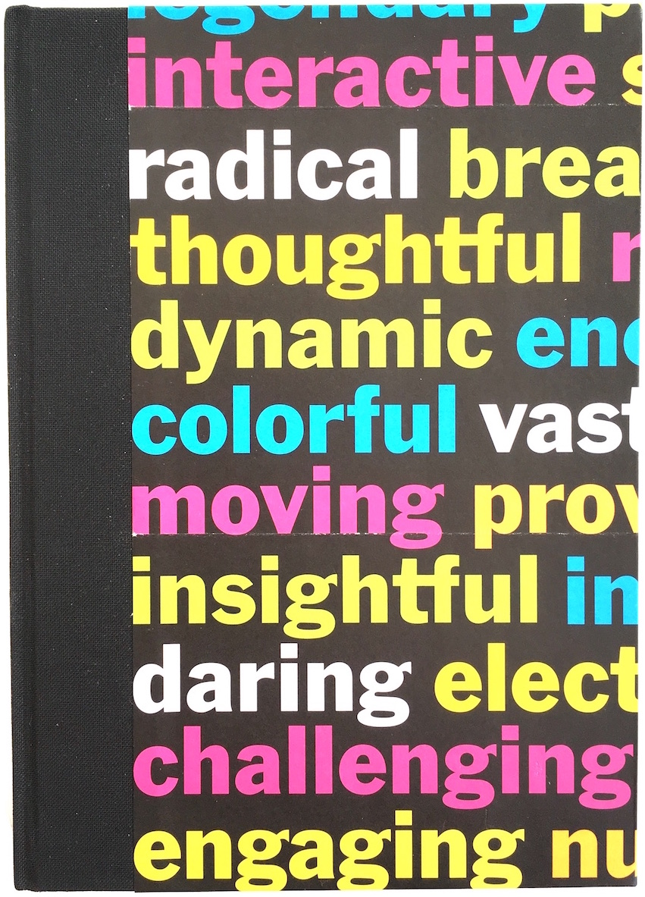

Flowlist
 Flowlist is an elegant tool for self-management and creative writing. Unbelievably easy yet infinitely flexible. Check out flowlistapp.com and organize your brain in flow!
Flowlist is an elegant tool for self-management and creative writing. Unbelievably easy yet infinitely flexible. Check out flowlistapp.com and organize your brain in flow!
I created Flowlist for myself out of frustration with the many task managers I had tried before. Now, I’m happily using Flowlist daily since June 2017, writing texts and organizing my whole life.
The simple concept of hierarchical lists, the fully animated beautiful interface and the consequent design for creative focus make Flowlist unique, widely applicable and incredibly fun!
Flowlist does not force your stuff into categories like “Project” or “Subtask”. Instead, items are universal and may contain other items, like folders on your Mac contain other folders. You’re free to organize yourself in your own way.
A novel interaction concept combines intuitive key commands, a radically clean interface and meaningful animations, so you can rapidly navigate and edit your item hierarchy in a state of deep concentration.
Flowtoolz at Github
 I put a lot of my code publicly on Github. Most notably, I released SwiftObserver, a Swift Package for reactive programming.
I put a lot of my code publicly on Github. Most notably, I released SwiftObserver, a Swift Package for reactive programming.
Then there are a few packages for working with the Language Server Protocol, like LSPService and SwiftLSP.
You’ll also find GetLaid, a real neat Swift Auto Layout wrapper as well as general frameworks that I use internally at flowtoolz and which are not so much intended for public consumption, like SwiftyToolz, FoundationToolz and UIToolz.
Zen in the Art of Software Architecture
 … is the tongue-in-cheek working title of a book I’m writing. It will be a casual and entertaining but also consistent and systematic dive into the fundamental principles that make software hold together or fall apart.
A series of excerpts from the draft starts is published on the blog.
I’ve been obsessing about the nature of software structure since I started coding at age 12. Now I’m gathering and integrating all my notes and writings on the subject. The draft is currently 100+ pages long.
The book is not exclusively directed at coders, but at everyone in the periphery of software development. It will have no code in it, not even pseudo code! It offers a fundamental and new perspective on the qualitative aspects of software, and it will contain lots of hand-drawn diagrams.
StockToolz
In 2017, I got into trading stocks, in particular swing trading via chart technique. I built an app that visualizes historic stock data from an unofficial API of yahoo finance.
The app also allowed me to test simple strategies and see how they compete. Supported by this app, I made money with every single trade, but I wasn’t too systematic about it. I’ll certainly come back to this project in the future.
ParetoSpeak
A simple but highly effective app for expanding your vocabulary in your own or in a foreign language. It trains your recall of the most used terms that you recently didn’t know, by combining term frequency vectors with a spaced repetition algorithm. The prototype worked well.
I hope I can pick this up at some point. If you’re interested in collaborating on such a project, download a german summary of this vision here.
Human-Audio Interaction Lab
During my master studies in Information Engineering, I became obsessed with a vision of a novel music composition interface. So I made it the subject of my thesis.
While I still stand behind the 36 requirements for music composition interfaces, my solution suffered from overthinking, and the academic prototype is not a minimal viable product. I don’t know that I will ever come back to this, since other ideas have more commercial potential.
Academic Writings
 Listing all Maximal Cliques of Large Sparse Graphs
GPU Based Stochastic Foliage Simplification
Die Erkenntnisleistung der Literatur
Deriving Semantic Word Distances from Web Search Hits
Visualization of Subspace Clusterings for High Dimensional Data
What Music Composition Interfaces Require
HAIL: Developing the Human-Audio Interaction Lab
Interaction Design for Mobile Music Composition
-
While I developed and formulated the above idea, I sifted through the scientific literature for weeks. However, I couldn’t find this articulated anywhere. This may have changed. If anyone has seen a description, term or formula for this, please let me know!
This distance function seems very appropriate and natural for clustering, information retrieval and data mining applications where objects (like documents) can be expressed as probability vectors (like term frequencies). It’s a metric, applicable to sets of n vectors (documents), and it’s actually based on measuring information (entropy). Having considered many practical criteria, I’m convinced this function expresses semantic distance better than any other distance function I came across.
The 33Day-Diary
 A structured journal that leads through a sort of meditation routine for 33 days, based on positive psychology. A page with more infos is available in english at www.flowtoolz.com/diary and in german at www.flowtoolz.com/tagebuch.
I needed something like the five minute journal for myself, but I was inspired to integrate some extensions into that idea and wanted it to be a beautiful physical object…
Now, the 3rd revision is done. A collaborator of mine handcrafts the books and gives every copy a unique design. I did a photo shoot of a bunch of example copies and had it professionally translated.
Sebastian Telle
I write and produce indie pop songs under my birth name Sebastian Telle (formerly as Mellowtree).
Dreamy, spacey, catchy art pop. I’ve been following this vision since I was 14, and created countless ideas.
Currently I’m focusing on generating more viable output, i.e. I’m working on a 10 track debut album. Collaborators are welcome, in particular instrumentalists. Since I’m drifting more and more to the production side, I also collaborate with musicians and produce their demos.